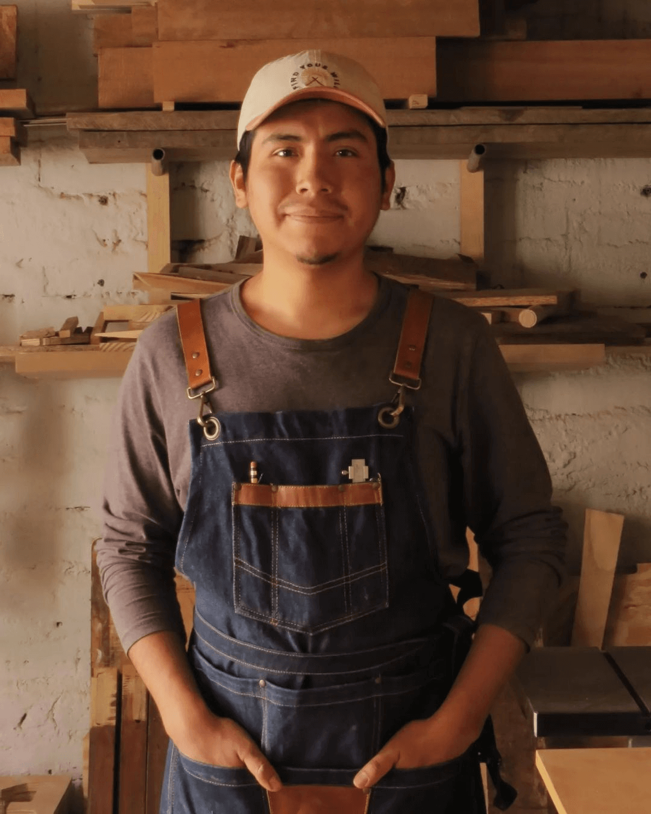
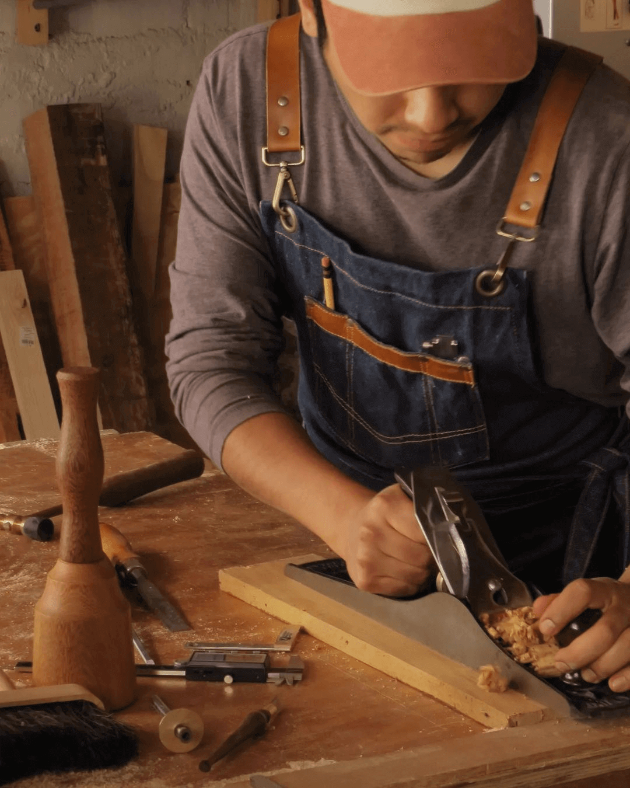
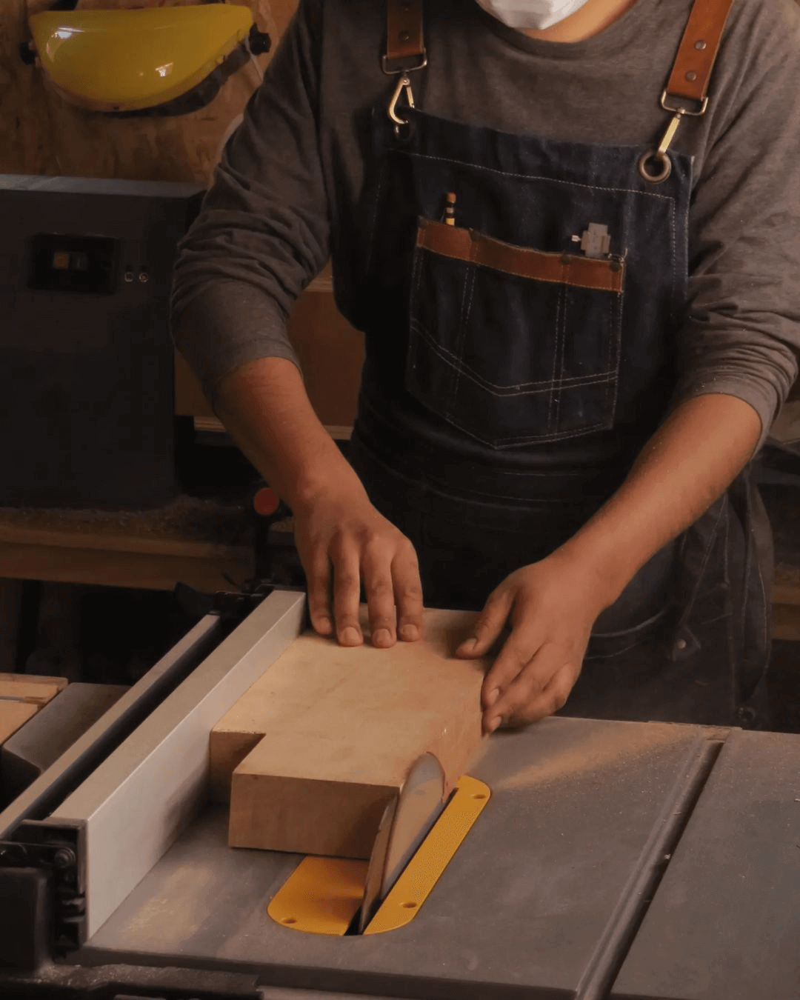
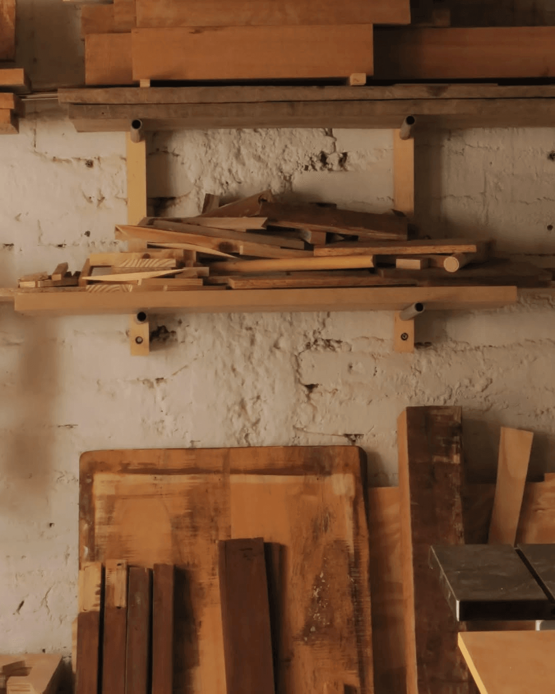

Historia de Maderatorio
Maderatorio es el resultado de la pasión y dedicación de Sebastián Escobedo, un carpintero cuyo amor por la madera comenzó desde joven. Al principio, su taller era pequeño, modesto, pero con una visión clara: crear piezas únicas y funcionales a partir de la belleza natural de la madera. Sebastián comenzó trabajando solo, utilizando herramientas básicas, y con cada proyecto, su conocimiento sobre las técnicas de carpintería y las propiedades de los diferentes tipos de madera fue creciendo. Cada día, aprendía más sobre los métodos adecuados para transformar la madera en algo que no solo tuviera un propósito, sino que también fuera una obra de arte.
A medida que el tiempo pasó, el taller fue evolucionando. Con el paso de los años, Sebastián logró adquirir nuevas máquinas que le permitieron optimizar su trabajo y aumentar la precisión en cada pieza que fabricaba. Su compromiso con la calidad lo llevó a investigar y adoptar nuevas técnicas, siempre buscando mejorar y adaptarse a las demandas del mercado. Al mismo tiempo, fue conociendo mejor las herramientas que le permitían perfeccionar su oficio, entendiendo cómo cada una podía ser utilizada para alcanzar el máximo potencial de la madera.
Con el crecimiento del taller, Sebastián no solo incorporó maquinaria más avanzada, sino que también fue ampliando su equipo. Así, lo que comenzó como un taller pequeño y unipersonal se transformó en un espacio que cuenta con una variedad de herramientas y máquinas especializadas para cada tipo de trabajo. El taller de Maderatorio ahora está implementado con tecnologías de última generación que permiten realizar desde muebles de alta calidad hasta trabajos más complejos, como la creación de mazos de carpintería o tableros personalizados.
Hoy en día, Maderatorio es reconocido por su capacidad para crear piezas únicas y de calidad excepcional. Cada proyecto que se realiza en el taller es una combinación de tradición, experiencia y tecnología. Las técnicas que se aplican en cada trabajo están cuidadosamente elegidas según las características de la madera y las necesidades del cliente, asegurando siempre el mejor resultado. En Maderatorio, no solo se trabaja la madera, sino que se transforma en productos que perduran en el tiempo, manteniendo la esencia de la carpintería artesanal, pero con la precisión y eficiencia que las herramientas modernas pueden ofrecer.
Así es como Maderatorio se ha consolidado como un taller de carpintería de referencia, en constante evolución y con un compromiso firme hacia la calidad y la satisfacción de sus clientes. Desde sus humildes comienzos hasta convertirse en un referente en la carpintería moderna, el taller sigue creciendo, innovando y creando piezas que no solo cumplen una función, sino que cuentan historias, la historia de cada pieza de madera que pasa por sus manos.